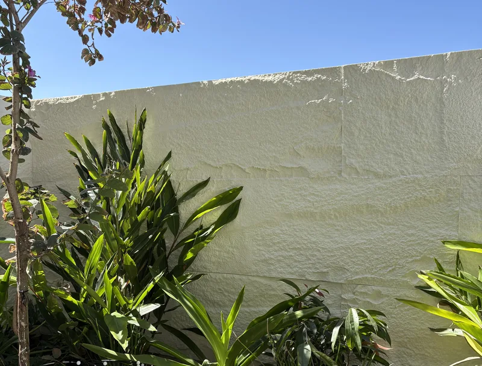
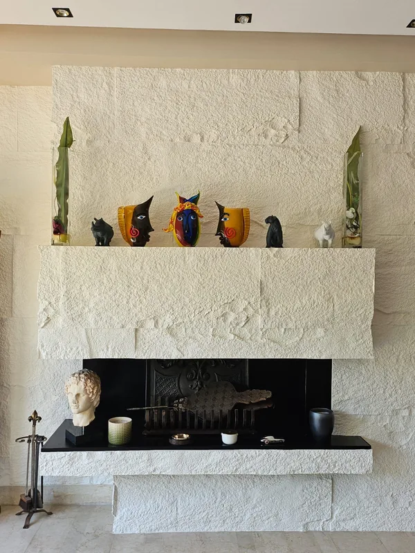
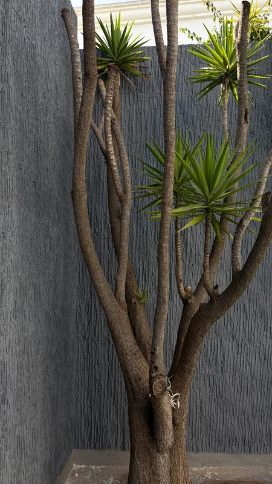
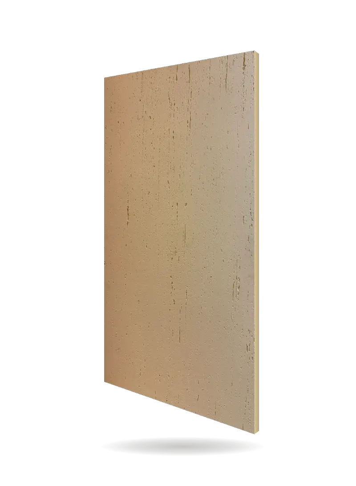
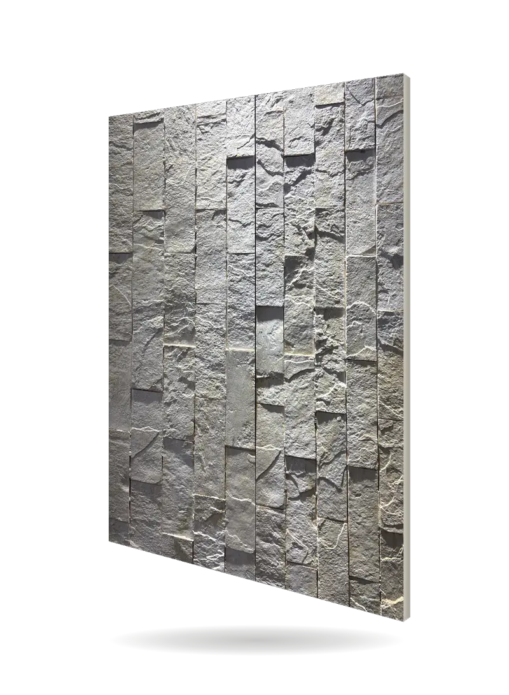

Panneaux effet pierre : l'aspect de la pierre, sans la pierre
Nos panneaux effet pierre reproduisent le relief de la pierre brute, de l'ardoise, du travertin ou de la brique, sans le poids ni la maçonnerie. En Polymère Celestone™, ils se posent à l'intérieur comme à l'extérieur, n'absorbent pas l'eau et se peignent dans votre teinte. Venez les toucher au showroom de Casablanca.
Mur de jardin, Résidence Anfa Heaven · Big Rock, beige
Cinq panneaux effet pierre, du plus brut au plus doux
Chaque modèle a son relief. Tous se posent à l'intérieur comme à l'extérieur, et se peignent dans la teinte de votre choix. Photos prises sur nos chantiers.

Big Rock
La pierre brute, en grands panneaux. Deux formats, que nos équipes combinent sur la plupart des chantiers.
Voir Big Rock
Mattoni
L'ardoise en fines lamelles. Elle accroche la lumière rasante, en anthracite comme en sable.
Voir Mattoni
Cubo
De petits blocs de pierre éclatée, en mosaïque. Sous un éclairage rasant, chaque bloc dessine son ombre.
Voir Cubo
Travertin
L'aspect du travertin, avec ses veines verticales. Une pierre plus douce, pour un salon, une entrée, une chambre.
Voir au catalogue
Brick
Des lames de briques en relief, pour un mur à l'esprit loft.
Voir au catalogueEt les autres effets
Même matière, même pose : l'effet béton de Cemento, Béton Brut et Béton Décoffrage, l'effet bois de Bois Cubo, le relief sculpté de Moon.
Le même panneau, du salon au mur de jardin
À l'intérieur
- Mur de salon et mur TV
- Cheminée, hall d'entrée, cage d'escalier
- Chambre et tête de lit
- Boutique, restaurant, réception
À l'extérieur
- Façade de villa et devanture
- Mur de jardin et clôture
- Mur de piscine
- Muret et terrasse
Dehors, la matière ne boit pas l'eau de pluie et tient au soleil grâce à ses additifs anti-UV. Dedans comme dehors, elle se peint avec une acrylique à l'eau pour l'extérieur, en Jotun.
Pierre naturelle, plaquette de parement, PVC ou Le Celestone™ : que choisir ?
Toutes ces solutions ont leurs qualités. Le tableau les met côte à côte pour un mur d'aspect pierre, sans parti pris.
| Solution | Aspect | Poids et pose | Dehors | Coût relatif |
|---|---|---|---|---|
| Pierre naturelle | La plus authentique : chaque pierre est unique | Poids important ; scellement au mortier par un maçon | Très durable, prend une patine | Le plus élevé (pierre et maçonnerie) |
| Plaquette de parement | Pierre fine ou reconstituée, aspect crédible | Collée pièce par pièce au mortier-colle, joints à faire | Selon le produit | Intermédiaire à élevé selon la pierre ; pose longue |
| Feuille de pierre | Fine couche de vraie pierre, surface presque plane | Collée en feuilles, peu de relief | Selon le produit | Élevé |
| PVC ou adhésif 3D | Relief imprimé ou peu profond | Très léger, collé ou autocollant | Surtout pour l'intérieur ; les adhésifs peuvent se décoller avec l'humidité | Le plus bas |
| Le Celestone™ | Relief profond : pierre brute, ardoise, travertin ou brique, peint à la teinte voulue | Léger, collé et vissé, sans maçonnerie | N'absorbe pas l'eau ; intérieur et extérieur | Intermédiaire : au-dessus du PVC, en dessous de la pierre posée |
Comparaison à surface égale, pose comprise. Pas de prix ici : ils varient trop d'un mur à l'autre (voir plus bas). Comparatifs détaillés : pierre de Taza, carrelage et zellige, bardage.
La plus authentique ?
La pierre naturelle, si le budget et un vrai chantier de maçonnerie ne font pas peur.
La moins chère ?
Le PVC ou l'adhésif 3D, surtout pour l'intérieur. À l'humidité, les adhésifs peuvent se décoller.
Et Le Celestone™ ?
Quand vous voulez le relief de la pierre, dedans comme dehors, sans maçonnerie et dans votre teinte.
Touchez la matière, faites le test de l'eau
Une photo ne dit pas tout d'un relief. Au showroom du boulevard d'Anfa, vous prenez les panneaux en main, vous comparez les modèles côte à côte et vous faites le test de l'eau : versée sur la matière, elle ne pénètre pas.
Venez avec une photo de votre mur et ses dimensions : on choisit ensemble le modèle et la teinte.
Vos teintes Jotun. Les panneaux sont livrés en primaire, prêts à peindre, dans la teinte de votre choix. Sur nos chantiers :
11 Rue Hounaine, Bd d'Anfa, Casablanca · Lun–Ven 10h30–13h / 15h30–19h · Sam 11h–13h
Comment se pose un panneau effet pierre
Par nos équipes, ou par vos soins : la page pose détaille chaque étape.
Modèle et teinte
Au showroom ou sur WhatsApp : le modèle, la teinte et la surface à habiller.
Visite et métré
Nous relevons les mesures du mur, ses angles et ses ouvertures, puis nous établissons le devis.
Pose
Chaque panneau est collé en cordons puis vissé, sans ossature. Joints et vis disparaissent sous le mastic acrylique.
Peinture
Mise en teinte avec une acrylique à l'eau pour l'extérieur, en Jotun, dedans comme dehors.
Prix d'un panneau effet pierre posé : de quoi il dépend
Aucun tarif au m² n'est publié : chaque mur a ses mesures, ses angles et sa hauteur. Voici les critères qui font le devis. Pour aller plus loin : la page prix d'un revêtement mural.
- La surface réellement habillée, ouvertures déduites.
- Le modèle : Big Rock, Mattoni, Cubo, Travertin, Brick.
- La hauteur et l'accès : mur de salon, double hauteur, façade.
- Les découpes autour des angles, des prises et des fenêtres.
- La peinture : teinte Jotun choisie.
Votre devis sur WhatsApp
Dites-nous :
- le modèle qui vous plaît ;
- intérieur ou extérieur, et quelle pièce ou quel mur ;
- la surface ou les dimensions approximatives ;
- votre délai.
Avec une photo du mur, nous vous renvoyons une simulation et une estimation dans les 24 h.
Demander mon devisPanneaux effet pierre : vos questions
Quel est le prix d'un panneau effet pierre au Maroc ?
Il varie avec la surface, le modèle, la hauteur, les découpes et la peinture : c'est pourquoi aucun tarif au m² n'est affiché. Donnez-nous sur WhatsApp le modèle, la surface et une photo du mur : la simulation et l'estimation vous reviennent en 24 h. Les critères sont détaillés sur la page prix d'un revêtement mural.
Peut-on poser un panneau effet pierre à l'extérieur ?
Oui. Hydrofuge, résistant à l'humidité et chargé d'additifs anti-UV, le Polymère Celestone™ tient dehors. Le même panneau habille une façade de villa, un mur de jardin ou un mur de piscine.
Quelle différence avec une plaquette de parement ?
La plaquette se pose pièce par pièce au mortier-colle, avec des joints à faire. Le Celestone™ se pose en panneaux, collés et vissés, puis peints : pas de maçonnerie, et une teinte au choix.
Et avec un panneau PVC effet pierre ?
Le PVC coûte moins cher et se pose vite, mais son relief est peu profond et il sert surtout à l'intérieur. Le Celestone™ a le relief de la pierre brute ou de l'ardoise, se pose dehors comme dedans et n'absorbe pas l'eau.
Quel est le prix de la pierre naturelle, comparé à un panneau effet pierre ?
La pierre naturelle posée coûte en général plus cher : il faut payer la pierre, le mortier et un chantier de maçonnerie plus long. Un panneau effet pierre se place entre le PVC et la pierre posée.
Est-ce que ça ressemble vraiment à de la pierre ?
Le relief a la profondeur de la pierre brute, de l'ardoise ou de la brique, et il accroche la lumière comme elle. Le mieux est d'en juger en vrai, panneau en main, au showroom.
Sur quelles surfaces peut-on poser un panneau effet pierre ?
Sur toute surface plane, en règle générale. Nos équipes en ont déjà posé sur du bois, du marbre, du BA13, et sur de l'enduit selon l'épaisseur du modèle choisi. Pendant la visite de métré, nous regardons votre mur avec vous.
Est-ce lourd à poser sur un grand mur ?
Non. Bien plus léger que la pierre, le panneau se colle et se visse, sans maçonnerie ni ossature, y compris en hauteur.
Quelle teinte choisir ?
Celle de votre choix : les panneaux sont livrés en primaire, prêts à peindre en Jotun. Sur nos chantiers : blanc, beige, greige, sable, olive, anthracite, noir.
Choisissez votre pierre
panneau en main
Passez au showroom pour comparer les modèles et faire le test de l'eau, ou envoyez-nous le modèle et la surface sur WhatsApp.
Showroom : 11 Rue Hounaine, Bd d'Anfa, Casablanca · Lun–Ven 10h30–13h / 15h30–19h · Sam 11h–13h